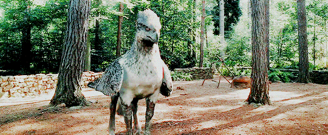
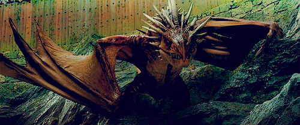

Hogwarts Express Departs Platform 9 3/4 For Another Year at
Hogwarts
The Hogwarts Express departed from Platform 9 3/4 early this
morning, signaling the start of another exciting year at
Hogwarts School of Witchcraft and Wizardry. Notable moments
from this year's departure included a surprise visit by the
famous Auror, Harry Potter, who was seen wishing his son,
Albus, good luck on his first day at Hogwarts.
BY RITA SKEETER
Quidditch Season Kicks Off with a Thrilling Match

The Quidditch season has officially begun, and fans were
treated to an exhilarating match between the Holyhead
Harpies and the Chudley Cannons. The stadium was filled with
enthusiastic supporters as both teams showcased exceptional
skills. Highlights of the game included spectacular saves by
the Harpies' Keeper and a near-miss Snitch catch by the
Cannons' Seeker.
By Ginny Weasley
Magical Creatures Conservation Efforts Gain Momentum

In recent news, the Department for the Regulation and
Control of Magical Creatures has announced increased funding
for conservation projects aimed at protecting endangered
magical species. This initiative includes the establishment
of new sanctuaries and the implementation of stricter
protection laws to prevent poaching and habitat destruction.
by Barnabas Cuffe
Breakthrough in Potion-Making: Cure for Common Cold
Discovered

After years of research, potioneers have announced a
breakthrough in curing the common cold. The potion, now
named "Colditus Vanishius," provides instant relief from
cold symptoms and is set to be widely distributed in magical
apothecaries soon. Experts believe this potion will be a
game-changer during the flu season.
By Andy Smudgley
Merfolk Demand Fair Treatment
Merfolk leaders petition the Ministry for equal rights
and better living conditions in their underwater
habitats.
By Kikis Trecus
Dragon Reserve Expands in Romania

The Romanian Dragon Sanctuary announces expansion plans
to protect newly discovered dragon species and their
habitats.
By E. Limaria
Ministry Launches Muggle Awareness Campaign
The Ministry of Magic has launched a campaign to educate
wizards on Muggle customs and technologies. Muggle
workshops now available.
By Eduardus Lima
Subscribe to the Owl Post